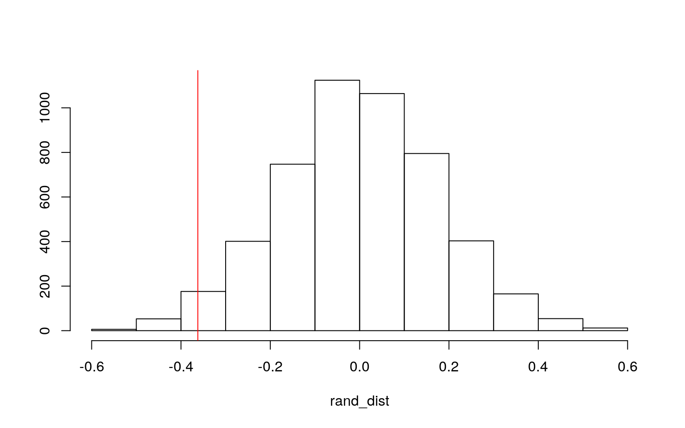
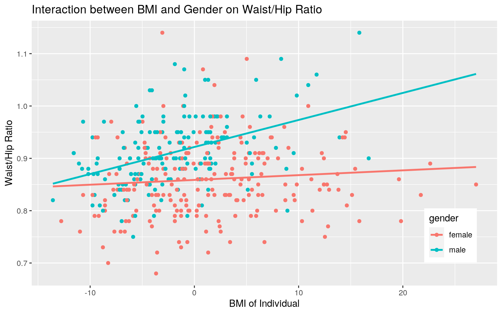
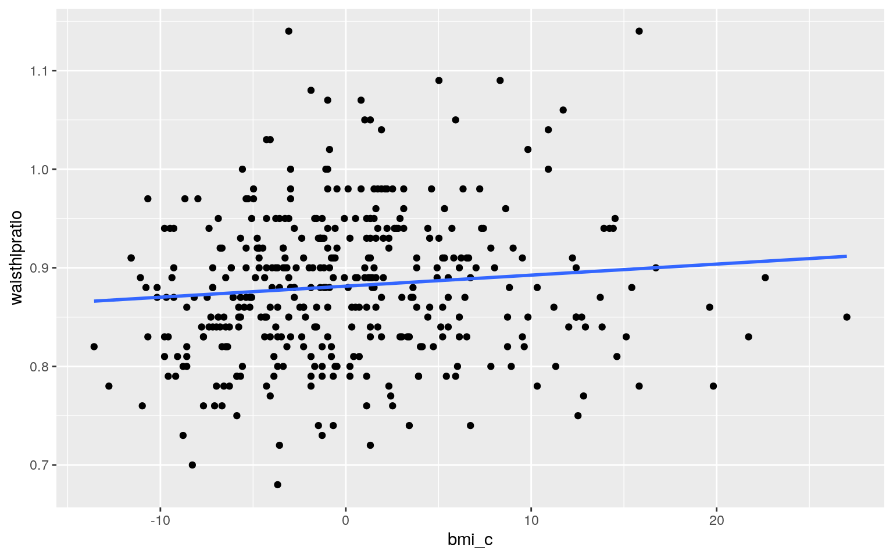
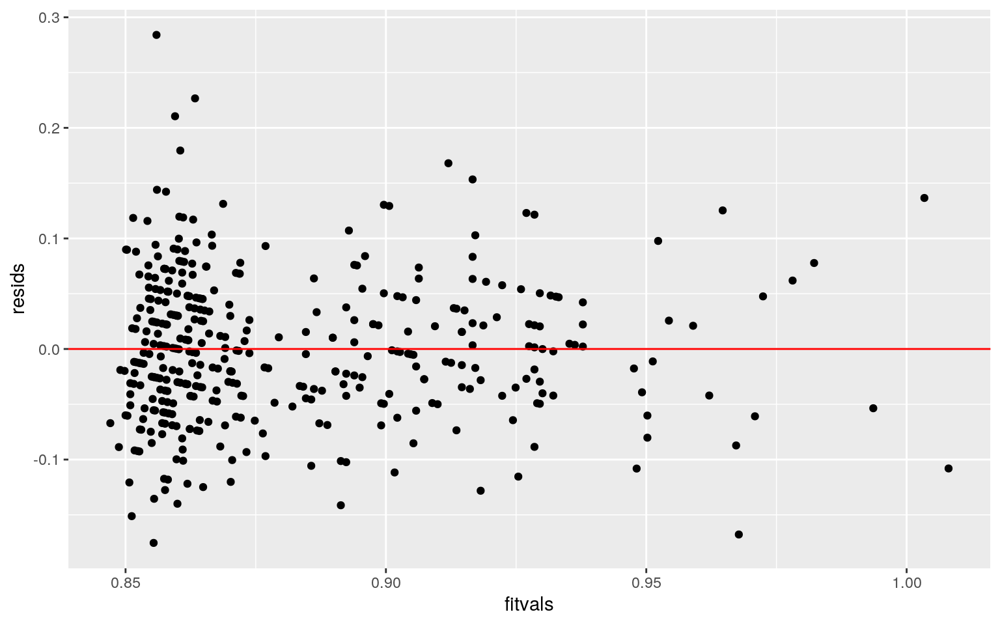
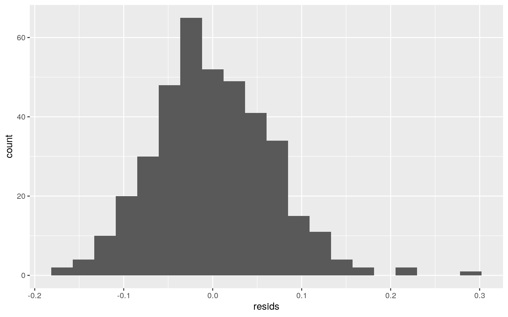
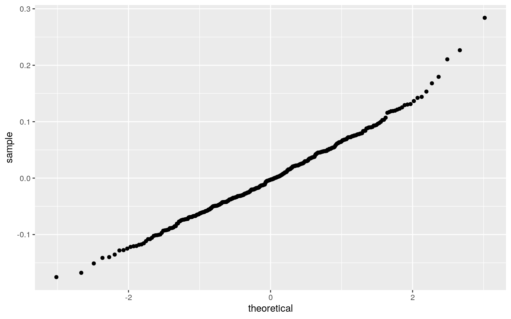
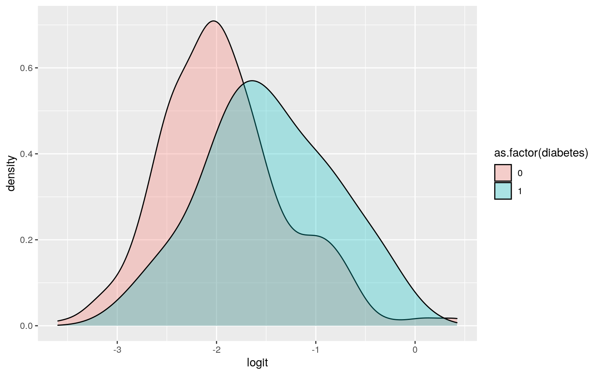
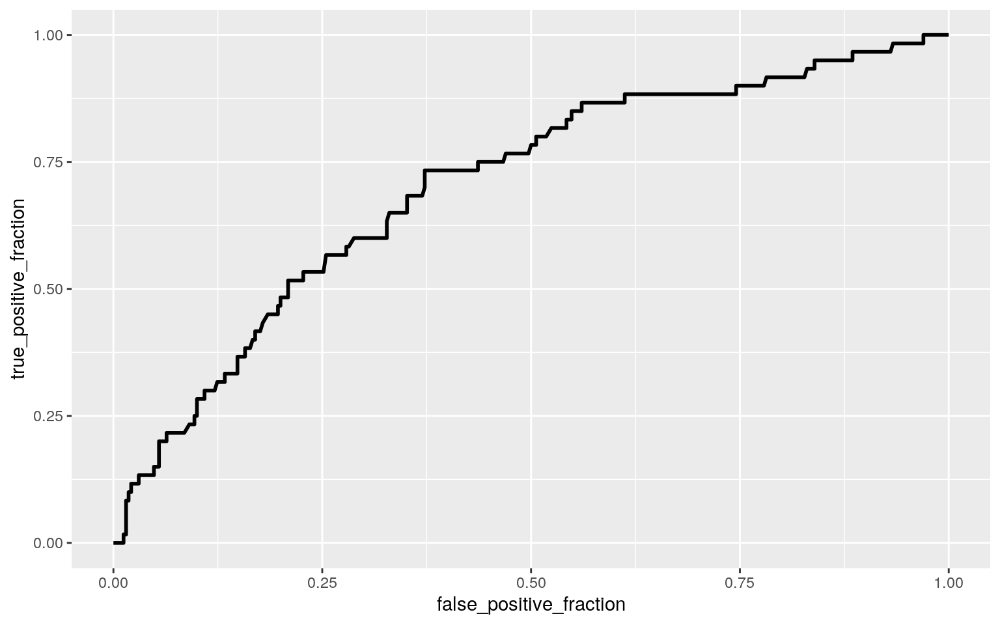

Question 0
This dataset contains 390 observations of 18 variables one of which is diabetes status. Sixty patients out of 390 were found to be diabetic. Some of the other "important" variables include Glucose, Chol/HDL ratio (the lower the healthier), Age, Gender, Systolic BP, Diastolic BP, and Waist/hip ratio (the lower the usually healthier). First, we will see if any of the numeric variables show a mean difference across Gender. Then, we will try to predict waist/hip ratio. Finally, we will use various logistic regressions to see how well we can predict Diabetes without using the Glucose variable.
Question 1
Perform a MANOVA testing whether any of your numeric variables (or a subset of them, if including them all is unreasonable or doesn’t make sense) show a mean difference across levels of one of your categorical variables
data <- read.csv("~/Diabetes_Classification.csv")
data <- data %>% select(3,5,6,7,10:12,15:16)
data <- data %>%
mutate(Diabetes = ifelse(Diabetes == "No diabetes",0,1))
names(data) <- c("glucose", "cholratio","age","gender","bmi","systbp","diastbp","waisthipratio","diabetes")
head(data)## glucose cholratio age gender bmi systbp diastbp
waisthipratio diabetes
## 1 77 3.9 19 female 22.5 118 70 0.84 0
## 2 79 3.6 19 female 26.4 108 58 0.83 0
## 3 75 4.0 20 female 29.3 110 72 0.89 0
## 4 97 3.2 20 female 19.6 122 64 0.79 0
## 5 91 2.4 20 female 20.2 122 86 0.82 0
## 6 69 2.7 20 female 27.6 108 70 0.93 0datanogluc <- data[,-1]
ques6 <- datanogluc
head(datanogluc)## cholratio age gender bmi systbp diastbp waisthipratio
diabetes
## 1 3.9 19 female 22.5 118 70 0.84 0
## 2 3.6 19 female 26.4 108 58 0.83 0
## 3 4.0 20 female 29.3 110 72 0.89 0
## 4 3.2 20 female 19.6 122 64 0.79 0
## 5 2.4 20 female 20.2 122 86 0.82 0
## 6 2.7 20 female 27.6 108 70 0.93 0test<-manova(cbind(glucose,cholratio, age, bmi, systbp, diastbp, waisthipratio)~gender, data=data)
summary(test)## Df Pillai approx F num Df den Df Pr(>F)
## gender 1 0.22433 15.782 7 382 < 2.2e-16 ***
## Residuals 388
## ---
## Signif. codes: 0 '***' 0.001 '**' 0.01 '*' 0.05 '.' 0.1
' ' 1The Manova shows the effect of gender on glucose, cholratio, age, bmi, systbp, diastbp,and waisthipratio. It showed a significant difference were found for at least one of the individual ANOVAs.
If they do, perform univariate ANOVAs to find response(s) showing a mean difference across groups and perform post-hoc t tests to find which groups differ.
summary.aov(test)## Response glucose :
## Df Sum Sq Mean Sq F value Pr(>F)
## gender 1 9816 9815.7 3.4125 0.06547 .
## Residuals 388 1116046 2876.4
## ---
## Signif. codes: 0 '***' 0.001 '**' 0.01 '*' 0.05 '.' 0.1
' ' 1
##
## Response cholratio :
## Df Sum Sq Mean Sq F value Pr(>F)
## gender 1 12.43 12.4312 4.1553 0.04218 *
## Residuals 388 1160.75 2.9916
## ---
## Signif. codes: 0 '***' 0.001 '**' 0.01 '*' 0.05 '.' 0.1
' ' 1
##
## Response age :
## Df Sum Sq Mean Sq F value Pr(>F)
## gender 1 745 744.59 2.7689 0.09692 .
## Residuals 388 104340 268.92
## ---
## Signif. codes: 0 '***' 0.001 '**' 0.01 '*' 0.05 '.' 0.1
' ' 1
##
## Response bmi :
## Df Sum Sq Mean Sq F value Pr(>F)
## gender 1 1095.1 1095.15 26.801 3.628e-07 ***
## Residuals 388 15854.4 40.86
## ---
## Signif. codes: 0 '***' 0.001 '**' 0.01 '*' 0.05 '.' 0.1
' ' 1
##
## Response systbp :
## Df Sum Sq Mean Sq F value Pr(>F)
## gender 1 255 254.99 0.4873 0.4855
## Residuals 388 203020 523.25
##
## Response diastbp :
## Df Sum Sq Mean Sq F value Pr(>F)
## gender 1 358 357.72 1.9682 0.1614
## Residuals 388 70519 181.75
##
## Response waisthipratio :
## Df Sum Sq Mean Sq F value Pr(>F)
## gender 1 0.24998 0.24998 52.855 1.996e-12 ***
## Residuals 388 1.83507 0.00473
## ---
## Signif. codes: 0 '***' 0.001 '**' 0.01 '*' 0.05 '.' 0.1
' ' 1####the Pairwise post hoc t tests are really not necessary since our categorical variable, Gender, (is not progressive and) has just 2 levels The ANOVA for the dependent variables were done to follow the MANOVA test. The univariate ANOVA for the stats suggested that the glucose, cholesterol ratio, age, bmi, and waisthipratio were significantly different by gender. Only BMI, waisthipratio, and Cholratio were significant at significance level of alpha = 0.05.
Discuss the number of tests you have performed, calculate the probability of at least one type I error (if unadjusted), and adjust the significance level accordingly (bonferroni correction) before discussing significant differences
In this case, we have performed 8 tests. We performed 7 anovas and 1 manova totaling to 8. The Pairwise post hoc t tests are really not necessary since our categorical variable, Gender, (is not progressive and) has just 2 levels We adjust the significance level accordingly (bonferroni correction), to get 0.05/8 = 0.0.00625. With this adjusted significance level for controlling Type 1 error rates, only BMI and waist to hip ratio, with p-values of 3.63e-07 and 2e-12 respectively, are significant. Confirmed by the t test, males and females were found to differ significantly from each other in terms of BMI and waist to hip ratio after adjusting for multiple comparisons.
Briefly discuss MANOVA assumptions and whether or not they are likely to have been met (no need for anything too in-depth)
library(rstatix)
group <- data$gender
DVs <- data %>% select(glucose,cholratio, age, bmi, systbp, diastbp, waisthipratio)
#Test multivariate normality for each group (null: assumption met)
sapply(split(DVs,group), mshapiro_test)## female male
## statistic 0.7831176 0.9482735
## p.value 4.496488e-17 1.138393e-05#If any p<.05, stop (assumption violated). If not, test homogeneity of covariance matricesWe're just going to stop here because the assumptions are already violated. There's no point in testing the homogeneity of covarience matrices. This data fits the usual situation where the data has many 0s, unequal sample sizes, etc and does not meet MANOVA assumptions! Our solution will be to use a randomization test to look at BMIs by gender!
Question 2
Perform some kind of randomization test on your data (that makes sense). The statistic can be anything you want (mean difference, correlation, F-statistic/ANOVA, chi-squared), etc. State null and alternative hypotheses, perform the test, and interpret the results. Create a plot visualizing the null distribution and the test statistic.
Null Hypothesis (Ho): The mean BMI is the same for males and females
Alternative Hypothesis (Ha):The mean BMI is different for males and females
mean_diff <- mean(data[data$gender=="female",]$cholratio)-mean(data[data$gender=="male",]$cholratio)
mean_diff## [1] -0.3622969#permutation loop
rand_dist<-vector()
for(i in 1:5000){
new<-data.frame(cholratio=sample(data$cholratio),gender=data$gender)
rand_dist[i]<-mean(new[new$gender=="female",]$cholratio) - mean(new[new$gender=="male",]$cholratio)}
#P-value of permutation test
mean(rand_dist<mean_diff)*2## [1] 0.0448#Independent t-test
t.test(data=data,cholratio~gender)##
## Welch Two Sample t-test
##
## data: cholratio by gender
## t = -2.0343, df = 344.28, p-value = 0.04269
## alternative hypothesis: true difference in means is not
equal to 0
## 95 percent confidence interval:
## -0.71259427 -0.01199962
## sample estimates:
## mean in group female mean in group male
## 4.374123 4.736420{hist(rand_dist,main="",ylab="",); abline(v = mean_diff,col="red")}
The p-value from the randomization test is 0 which is less than 0.05 of alpha, so we can reject the null hypothesis and state that the mean BMI is different for males and females of those sampled. The randomization data is verified by the independent t test. The graph shows the null distribution and the test statistic.
Question 3
Build a linear regression model predicting one of your response variables from at least 2 other variables, including their interaction. Mean-center any numeric variables involved in the interaction.
Interpret the coefficient estimates (do not discuss significance)
data$bmi_c<-data$bmi-mean(data$bmi)
fit <- lm(waisthipratio ~ gender + bmi_c + gender*bmi_c, data=data)
summary(fit)##
## Call:
## lm(formula = waisthipratio ~ gender + bmi_c + gender *
bmi_c,
## data = data)
##
## Residuals:
## Min 1Q Median 3Q Max
## -0.175392 -0.042565 -0.002796 0.045183 0.284059
##
## Coefficients:
## Estimate Std. Error t value Pr(>|t|)
## (Intercept) 0.8587526 0.0044779 191.774 < 2e-16 ***
## gendermale 0.0629335 0.0071170 8.843 < 2e-16 ***
## bmi_c 0.0009142 0.0006343 1.441 0.15031
## gendermale:bmi_c 0.0042500 0.0011357 3.742 0.00021 ***
## ---
## Signif. codes: 0 '***' 0.001 '**' 0.01 '*' 0.05 '.' 0.1
' ' 1
##
## Residual standard error: 0.06625 on 386 degrees of
freedom
## Multiple R-squared: 0.1875, Adjusted R-squared: 0.1812
## F-statistic: 29.69 on 3 and 386 DF, p-value: < 2.2e-16The intercept estimate is 0.858753, which is the average waist to hip ratio for females with mean BMI and no interaction between gender and BMI. The coefficent estimate of gender is 0.062934 which is how much the average waist to hip ratio increases, when the gender is male. The coefficient of bmi_c, 0.000914, is how much the average waist to hip ratio increases for each 1 unit increase in BMI. The coefficient for gendermale:bmi_c, which is 0.004250, is how much the average waist to hip ratio will additionally increase per unit of BMI increase if the indivual is male.
Plot the regression using ggplot() using geom_smooth(method=“lm”). If your interaction is numeric by numeric, refer to code in the slides to make the plot or check out the interactions package, which makes this easier. If you have 3 or more predictors, just chose two of them to plot for convenience.
ggplot(data, aes(x=bmi_c, y=waisthipratio, group=gender))+geom_point(aes(color=gender))+
geom_smooth(method="lm",se=F,fullrange=T,aes(color=gender))+theme(legend.position=c(.9,.19))+xlab("BMI of Individual")+ ylab("Waist/Hip Ratio")+ggtitle("Interaction between BMI and Gender on Waist/Hip Ratio")
Since the lines by group are not parallel, we know there is interaction between the two terms.
Check assumptions of linearity, normality, and homoskedasticity either graphically or using a hypothesis test
resids<-fit$residuals; fitvals<-fit$fitted.values
#Linearity
ggplot(data, aes(x=bmi_c, y=waisthipratio)) + geom_point() + geom_smooth(method = "lm", se=F)
##Homoskedasticity
ggplot()+geom_point(aes(fitvals,resids))+geom_hline(yintercept=0, col="red")
bptest(fit)##
## studentized Breusch-Pagan test
##
## data: fit
## BP = 6.8752, df = 3, p-value = 0.07598#Normality
ggplot()+geom_histogram(aes(resids),bins=20) 
ggplot()+geom_qq(aes(sample=resids))+geom_qq()
shapiro.test(resids)##
## Shapiro-Wilk normality test
##
## data: resids
## W = 0.98951, p-value = 0.006804The numeric variable, waist/hip ratio, does seem to have a linear relationship with BMI + Gender. From the Breusch-Pagan test, we have to reject the null hypothesis of homoskedasticity because the pvalue shows significance. The Shaprio_wilk Test null hypothesis is also rejected becuase the test was also significant. The assumptions of linearity seemed to met, but the assumptions for homoskedasticity and normality were not met. We proceed anyways....
Regardless, recompute regression results with robust standard errors via coeftest(..., vcov=vcovHC(...)). Discuss significance of results, including any changes from before/after robust SEs if applicable.
#Heteroskedasticity Robust Standard Errors
coeftest(fit, vcov = vcovHC(fit))##
## t test of coefficients:
##
## Estimate Std. Error t value Pr(>|t|)
## (Intercept) 0.85875260 0.00480013 178.9018 < 2.2e-16 ***
## gendermale 0.06293353 0.00754813 8.3376 1.351e-15 ***
## bmi_c 0.00091416 0.00060753 1.5047 0.1332140
## gendermale:bmi_c 0.00425005 0.00126721 3.3539 0.0008758
***
## ---
## Signif. codes: 0 '***' 0.001 '**' 0.01 '*' 0.05 '.' 0.1
' ' 1Since the data did not meet the assumptions, except for linearity, the regression for heteroskadisicty robust standard errors was done. The t-value seem to change a little. Everything else seems to be simliar. Gender and the interaction of gender and BMI are still significant at a = 0.05. The BMI on its own is not.
What proportion of the variation in the outcome does your model explain?
My model explains barely anything, around 18-19% of the variation in the outcome based on the R^2 value from the summary output.
Question 4
Rerun same regression model (with the interaction), but this time compute bootstrapped standard errors (by resampling observations). Discuss any changes you observe in SEs and p-values using these SEs compared to the original SEs and the robust SEs)
samp_distn<-replicate(5000, {
boot_dat<-boot_dat<-data[sample(nrow(data),replace=TRUE),]
fit <- lm(waisthipratio ~ gender + bmi_c + gender*bmi_c, data=boot_dat)
coef(fit)
})
## Estimated SEs
booterrors <- samp_distn%>%t%>%as.data.frame%>%summarize_all(sd)
booterrors## (Intercept) gendermale bmi_c gendermale:bmi_c
## 1 0.004792344 0.007436288 0.0006144632 0.001219299bootSEs <- t(rbind(coeftest(fit)[,1],booterrors))
colnames(bootSEs)<- c("Estimate", "Std. Error")
## Empirical 95% CI
samp_distn%>%t%>%as.data.frame%>%gather%>%group_by(key)%>%
summarize(lower=quantile(value,.025), upper=quantile(value,.975))## # A tibble: 4 x 3
## key lower upper
## <chr> <dbl> <dbl>
## 1 (Intercept) 0.849 0.868
## 2 bmi_c -0.000270 0.00213
## 3 gendermale 0.0479 0.0768
## 4 gendermale:bmi_c 0.00189 0.00667(coeftest(fit)[,1:2]) ## Normal-theory SEs## Estimate Std. Error
## (Intercept) 0.8587525956 0.0044779291
## gendermale 0.0629335309 0.0071169559
## bmi_c 0.0009141584 0.0006342625
## gendermale:bmi_c 0.0042500479 0.0011357181coeftest(fit, vcov=vcovHC(fit))[,1:2] ## Robust SEs## Estimate Std. Error
## (Intercept) 0.8587525956 0.0048001347
## gendermale 0.0629335309 0.0075481311
## bmi_c 0.0009141584 0.0006075275
## gendermale:bmi_c 0.0042500479 0.0012672128bootSEs ## Bootstrapped by observation SEs## Estimate Std. Error
## (Intercept) 0.8587525956 0.0047923443
## gendermale 0.0629335309 0.0074362881
## bmi_c 0.0009141584 0.0006144632
## gendermale:bmi_c 0.0042500479 0.0012192990The data was rerun using the bootstrapped standard errors, because it was non-normal. The bootstrp standrd error using the row resmapling were ever so slightly lower than the robust heteroskedatic errors and a little lower than the orignal standard error. The bootstrapped standard error using the residual sampling were the same to the boot strapped stanrd error using the row sampling. The 95% confidence outputted above includes 0 for bmi_c so we know it is not significant.
Question 5
Fit a logistic regression model predicting a binary variable (if you don’t have one, make/get one) from at least two explanatory variables (interaction not necessary).
Going to try to predict diabetes WITHOUT using glucose as a variable to make things more interesting!
fit <- glm(diabetes ~ systbp + waisthipratio, data=datanogluc, family="binomial")
summary(fit)##
## Call:
## glm(formula = diabetes ~ systbp + waisthipratio, family
= "binomial",
## data = datanogluc)
##
## Deviance Residuals:
## Min 1Q Median 3Q Max
## -1.3610 -0.5866 -0.4812 -0.3784 2.4456
##
## Coefficients:
## Estimate Std. Error z value Pr(>|z|)
## (Intercept) -9.687887 1.906442 -5.082 3.74e-07 ***
## systbp 0.019667 0.005797 3.392 0.000693 ***
## waisthipratio 5.831991 1.952509 2.987 0.002818 **
## ---
## Signif. codes: 0 '***' 0.001 '**' 0.01 '*' 0.05 '.' 0.1
' ' 1
##
## (Dispersion parameter for binomial family taken to be 1)
##
## Null deviance: 334.87 on 389 degrees of freedom
## Residual deviance: 311.81 on 387 degrees of freedom
## AIC: 317.81
##
## Number of Fisher Scoring iterations: 5exp(coef(fit))## (Intercept) systbp waisthipratio
## 6.203032e-05 1.019861e+00 3.410369e+02#dividing log odds by 10 to get every 0.1 unit increase in waist hip ratio instead of 1
exp(0.00282/10)## [1] 1.000282When controlling for waist to hip ratio,there is a signficant effect of systolic blood pressure on the odds of diabetes of the individual. Every gain in 1 unit in systolic blood pressire mutliples the odds of being diabetic by 1.01986. Controlling for systolic blood pressure, there is a signficant effect of waist to hip ratio on the odds of diabetes. For each 0.1 unit increase in waist hip ratio, the odds of having diabetes increase by 1.00028.
Report a confusion matrix for your logistic regression. Compute and discuss the Accuracy, Sensitivity (TPR), Specificity (TNR), Precision (PPV), and AUC of your model
datanogluc<- datanogluc%>%mutate(prob=predict(fit, type="response"), prediction=ifelse(prob>.5,1,0))
classify<-datanogluc%>%transmute(prob,prediction,truth=diabetes)
table(prediction=classify$prediction,truth=classify$truth)%>%addmargins()## truth
## prediction 0 1 Sum
## 0 326 60 386
## 1 4 0 4
## Sum 330 60 390#accuracy
(327+1)/390## [1] 0.8410256#sensitivity (tpr)
0/60## [1] 0#specificity tnr
326/330## [1] 0.9878788#precision ppv
0/4## [1] 0The accurary gives us the propotion of predicted diabetics who are actually diabetics and predicted nondiabetics who are truly nondiabetic from the total and is 0.841026. The sensitivity or the proportion of diabetics correctly classified is 0 which is not very good. The specificity or true negative rate, proportion of nondiabetics who are correctly classified is much better at 0.987879. The precision or proportion classified diabetic who actually are is 0. This model is lacking because it is unable to find a predictor that is shared by the diabetics. The AUC will be discussed below with the ROC plot.
Using ggplot, make a density plot of the log-odds (logit) colored/grouped by your binary outcome variable
datanogluc$odds <- (datanogluc$prob)/(1-datanogluc$prob)
datanogluc$logit<-log(datanogluc$odds)
ggplot(datanogluc)+geom_density(aes(logit, fill=as.factor(diabetes)), alpha=0.3)
class_diag to verify Accuracy, Sensitivity (TPR), Specificity (TNR), Precision (PPV)
datanogluc$prob <- predict(fit, type="response")
class_diag<-function(probs,truth){
tab<-table(factor(probs>.5,levels=c("FALSE","TRUE")),truth)
acc=sum(diag(tab))/sum(tab)
sens=tab[2,2]/colSums(tab)[2]
spec=tab[1,1]/colSums(tab)[1]
ppv=tab[2,2]/rowSums(tab)[2]
f1=2*(sens*ppv)/(sens+ppv)
if(is.numeric(truth)==FALSE & is.logical(truth)==FALSE) truth<-as.numeric(truth)-1
#CALCULATE EXACT AUC
ord<-order(probs, decreasing=TRUE)
probs <- probs[ord]; truth <- truth[ord]
TPR=cumsum(truth)/max(1,sum(truth))
FPR=cumsum(!truth)/max(1,sum(!truth))
dup<-c(probs[-1]>=probs[-length(probs)], FALSE)
TPR<-c(0,TPR[!dup],1); FPR<-c(0,FPR[!dup],1)
n <- length(TPR)
auc<- sum( ((TPR[-1]+TPR[-n])/2) * (FPR[-1]-FPR[-n]) )
data.frame(acc,sens,spec,ppv,f1,auc)
}
class_diag(datanogluc$prob,datanogluc$diabetes)## acc sens spec ppv f1 auc
## 1 0.8358974 0 0.9878788 0 NaN 0.7015657Generate an ROC curve (plot) and calculate AUC (either manually or with a package); interpret
ROCplot<-ggplot(classify)+geom_roc(aes(d=truth,m=prob), n.cuts=0)
ROCplot
calc_auc(ROCplot)## PANEL group AUC
## 1 1 -1 0.7015657The AUC of the model is 0.701566, which is just barely into Fair. ROC curve lets us visualize trade-off between sensitivity and specificity and the closer it is to a right angle the better. This is not very right angular. Systolic BP and waist to hip ratio in a model make for a not great predictor of diabetes.
Question 6
Perform a logistic regression predicting the same binary response variable from ALL of the rest of your variables (the more, the better!)
Fit model, compute in-sample classification diagnostics (Accuracy, Sensitivity, Specificity, Precision, AUC), and interpret.
datanogluc <- ques6
set.seed(8)
fit <- glm(diabetes ~ ., data=datanogluc, family="binomial")
prob <- predict(fit, type="response")
class_diag<-function(probs,truth){
tab<-table(factor(probs>.5,levels=c("FALSE","TRUE")),truth)
acc=sum(diag(tab))/sum(tab)
sens=tab[2,2]/colSums(tab)[2]
spec=tab[1,1]/colSums(tab)[1]
ppv=tab[2,2]/rowSums(tab)[2]
f1=2*(sens*ppv)/(sens+ppv)
if(is.numeric(truth)==FALSE & is.logical(truth)==FALSE) truth<-as.numeric(truth)-1
#CALCULATE EXACT AUC
ord<-order(probs, decreasing=TRUE)
probs <- probs[ord]; truth <- truth[ord]
TPR=cumsum(truth)/max(1,sum(truth))
FPR=cumsum(!truth)/max(1,sum(!truth))
dup<-c(probs[-1]>=probs[-length(probs)], FALSE)
TPR<-c(0,TPR[!dup],1); FPR<-c(0,FPR[!dup],1)
n <- length(TPR)
auc<- sum( ((TPR[-1]+TPR[-n])/2) * (FPR[-1]-FPR[-n]) )
data.frame(acc,sens,spec,ppv,f1,auc)
}
class_diag(prob,datanogluc$diabetes)## acc sens spec ppv f1 auc
## 1 0.8358974 0.15 0.9606061 0.4090909 0.2195122 0.8082323If we use every variable from the data set without glucose as a predictor of diabetes, the model is improved to an AUC of 0.808232 which is good, for in sample classification. The accurary gives us the propotion of predicted diabetics who are actually diabetics and predicted nondiabetics who are truly nondiabetic from the total and is 0.835897. The sensitivity or the proportion of diabetics correctly classified is 0.15 which is not very good. The specificity or true negative rate, proportion of nondiabetics who are correctly classified is much better than the true positive rate at 0.960606. The precision or proportion classified diabetic who actually are is 0.409091. This model is still lacking because it is not good at predicting people who do in fact have diabetes.
Perform 10-fold (or repeated random sub-sampling) CV with the same model and report average out-of-sample classification diagnostics (Accuracy, Sensitivity, Specificity, Precision, and AUC); interpret AUC and compare with the in-sample metrics.
datanogluc <- ques6
set.seed(8)
k=10
data1<-datanogluc %>% sample_frac #put dataset in random order
folds<-ntile(1:nrow(datanogluc),n=10) #create folds
diags<-NULL
for(i in 1:k){ # FOR EACH OF 10 FOLDS
train<-data1[folds!=i,] # CREATE TRAINING SET
test<-data1[folds==i,] # CREATE TESTING SET
truth<-test$diabetes
fit<- glm(diabetes~., data=train, family="binomial")
probs<- predict(fit, newdata=test,type="response" )
diags<-rbind(diags,class_diag(probs,truth)) #CV DIAGNOSTICS FOR EACH FOLD
}
summarize_all(diags,mean)## acc sens spec ppv f1 auc
## 1 0.8307692 0.1080952 0.9608042 NaN NaN 0.7657792If we use every variable from the data set without glucose as a predictor of diabetes for out of sample data, the model is has an AUC of 0.765779 which is fair. The accurary gives us the propotion of predicted diabetics who are actually diabetics and predicted nondiabetics who are truly nondiabetic from the total and is 0.830769. The sensitivity or the proportion of diabetics correctly classified is 0.108095 which is bad. The specificity or true negative rate, proportion of nondiabetics who are correctly classified is still much better at 0.960804. The precision or proportion classified diabetic who actually are is NaN. This model is still lacking because it is not good at predicting people who do in fact have diabetes. It did moderate in sample and has done worse out of sample.
Perform LASSO on the same model/variables. Choose lambda to give the simplest model whose accuracy is near that of the best (i.e., lambda.1se). Discuss which variables are retained.
datanogluc <- ques6
library(glmnet)
set.seed(10)
y<-as.matrix(datanogluc$diabetes) #grab response
data_preds<-model.matrix(diabetes~.,data=datanogluc)[,-1]
head(data_preds)## cholratio age gendermale bmi systbp diastbp
waisthipratio
## 1 3.9 19 0 22.5 118 70 0.84
## 2 3.6 19 0 26.4 108 58 0.83
## 3 4.0 20 0 29.3 110 72 0.89
## 4 3.2 20 0 19.6 122 64 0.79
## 5 2.4 20 0 20.2 122 86 0.82
## 6 2.7 20 0 27.6 108 70 0.93cv<-cv.glmnet(data_preds,y,family="binomial")
lasso_fit<-glmnet(data_preds,y,family="binomial",lambda=cv$lambda.1se)
coef(lasso_fit)## 8 x 1 sparse Matrix of class "dgCMatrix"
## s0
## (Intercept) -3.22008837
## cholratio 0.11524482
## age 0.02000936
## gendermale .
## bmi .
## systbp .
## diastbp .
## waisthipratio .prob <- predict(lasso_fit, data_preds, type="response")
class_diag(prob,datanogluc$diabetes)## acc sens spec ppv f1 auc
## 1 0.8487179 0.01666667 1 1 0.03278689 0.7911111After running the lasso regression on the linear model predicitng diabetes from all the other variavles (other than glucose), the variables of cholesterol/hdl ratio as well as age are significant.
Perform 10-fold CV using only the variables lasso selected: compare model’s out-of-sample AUC to that of your logistic regressions above
datanogluc <- ques6
set.seed(4)
k=10
data1<-datanogluc %>% sample_frac #put dataset in random order
folds<-ntile(1:nrow(datanogluc),n=10) #create folds
diags<-NULL
for(i in 1:k){ # FOR EACH OF 10 FOLDS
train<-data1[folds!=i,] # CREATE TRAINING SET
test<-data1[folds==i,] # CREATE TESTING SET
truth<-test$diabetes
fit<- glm(diabetes~ cholratio + age, data=train, family="binomial")
probs<- predict(fit, newdata=test,type="response" )
diags<-rbind(diags,class_diag(probs,truth)) #CV DIAGNOSTICS FOR EACH FOLD
}
summarize_all(diags,mean)## acc sens spec ppv f1 auc
## 1 0.8307692 0.06666667 0.9696253 NaN NaN 0.8097907If we use cholesterol/HDL ratio and age from the data set without glucose as predictors of diabetes for out of sample data, the model is has an AUC of 0.809791 which is marginally improved from using every predictor. The accurary gives us the propotion of predicted diabetics who are actually diabetics and predicted nondiabetics who are truly nondiabetic from the total and is 0.830769. The sensitivity or the proportion of diabetics correctly classified is 0.0666667 which is bad. The specificity or true negative rate, proportion of nondiabetics who are correctly classified is still much better at 0.969625. The precision or proportion classified diabetic who actually are is NaN. Overall this model is a bit better than the original model because the in sample AUC didn't change much and the out of sample improved.
Turns out you can't really predict diabetes well without glucose.